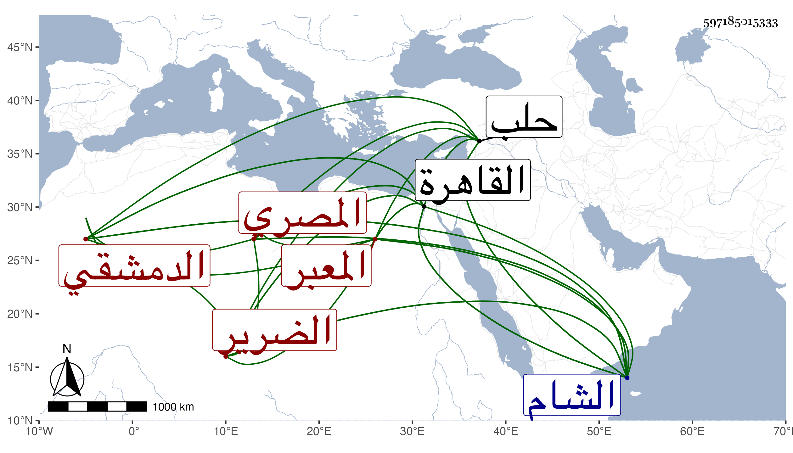

0902Sakhawi.DawLamic.ITO20230111-ara1.EIS1600.597185015333
Biography ID: 597185015333
450
أحمد بن محمد بن عماد الشهاب أبو العباس المصري ثم الدمشقي الضرير نزيل حلب ويقال له حميد الضرير وحميد المعبر . اشتغل بالقاهرة ودخل الشام مرارا وكان جيدا حسنا لطيفا عنده ظرف وله في التعبير يد طولى وينظم نظما جيدا ويعلم الناس الوعظ مسترزقا بذلك كله وسافر إلى القاهرة وتوفي بعد الفتنة التمرية . ذكره ابن خطيب الناصرية وكتب عنه الناس من نظمه مرثيته في أحمد بن عمر ابن محمد بن أبي الرضى وغيرها وارخه شيخنا في سنة ثلاث وأنه كان يعلم الوعاظ ما يقولونه في المشاهد والمجامع وأشار للمرثية بالموشح المشهور وقال غيره أنه دخل الشام يسترزق مع الوعاظ وأنه كان يعبر بغير أجرة وله إصابات عجيبة وله نظم ويد في الوعظ .
